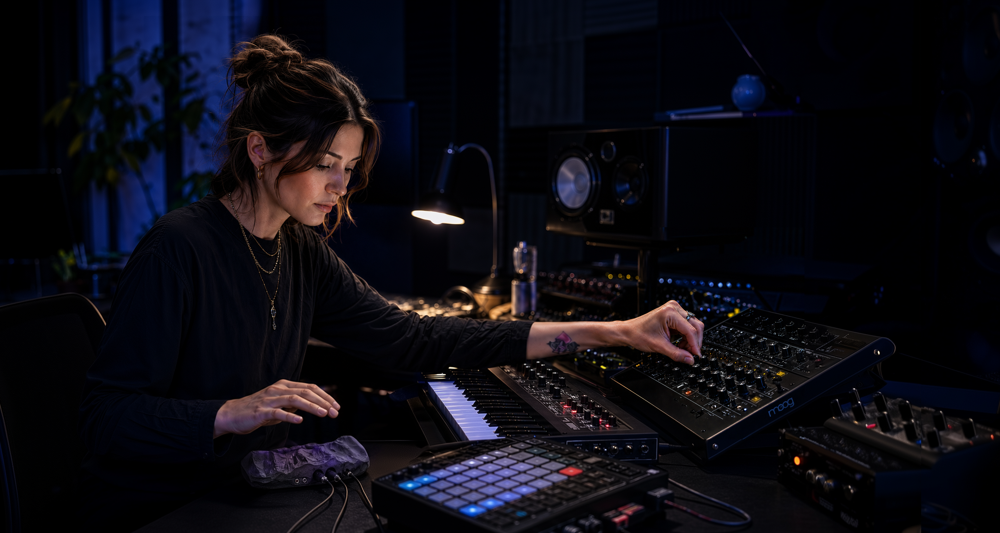
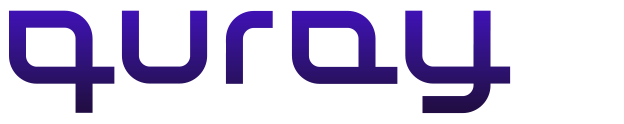
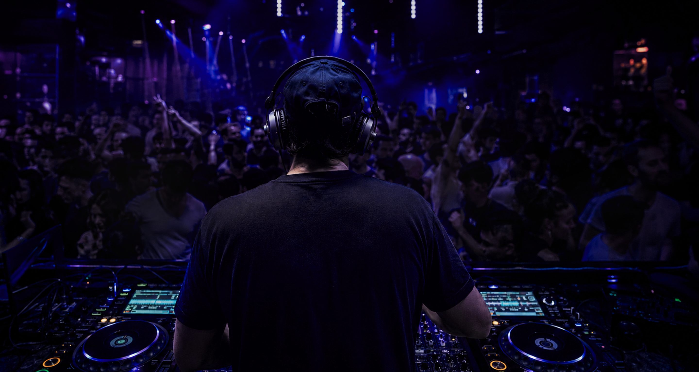
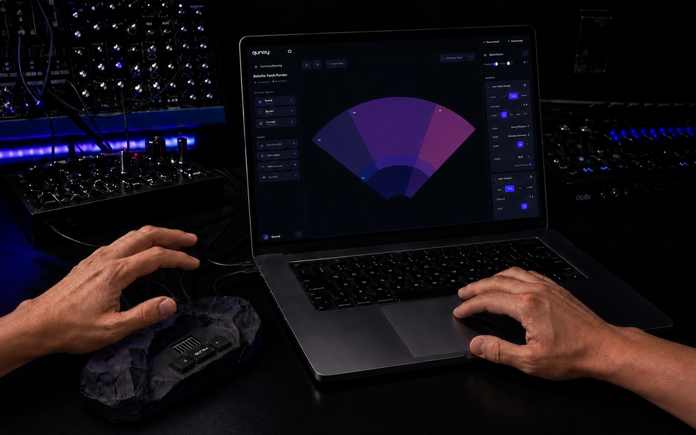
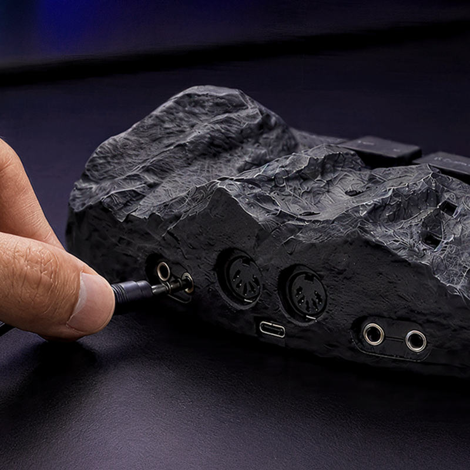
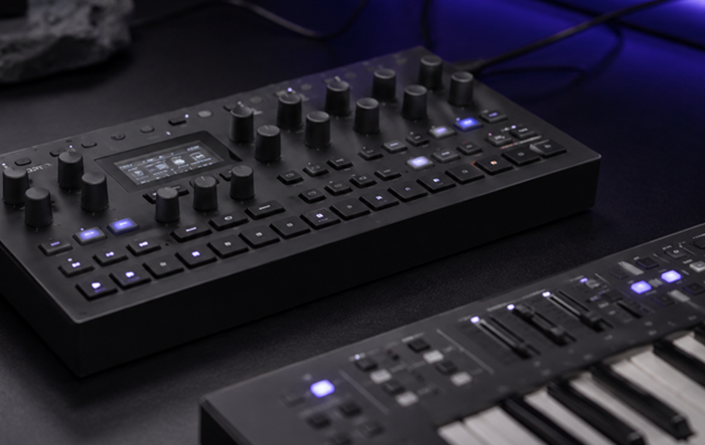
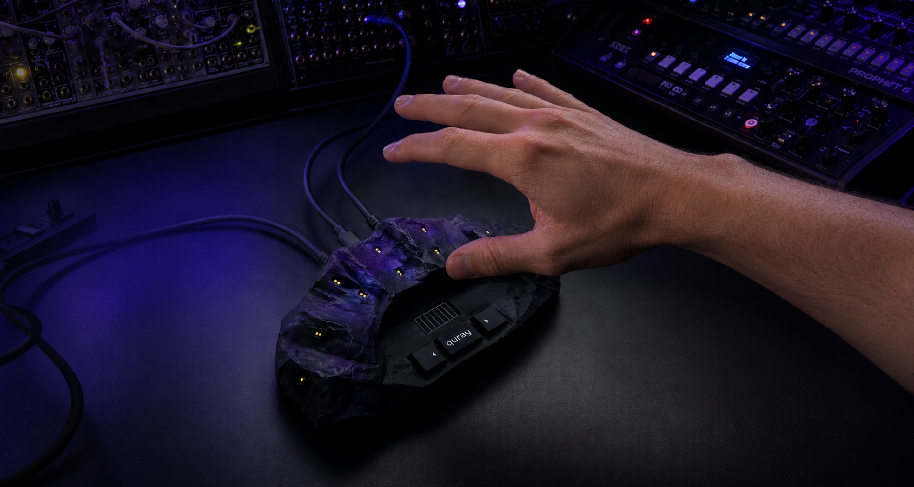
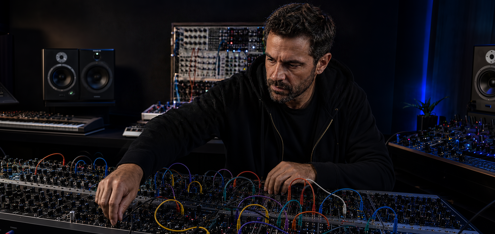
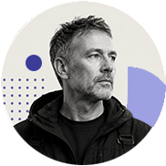
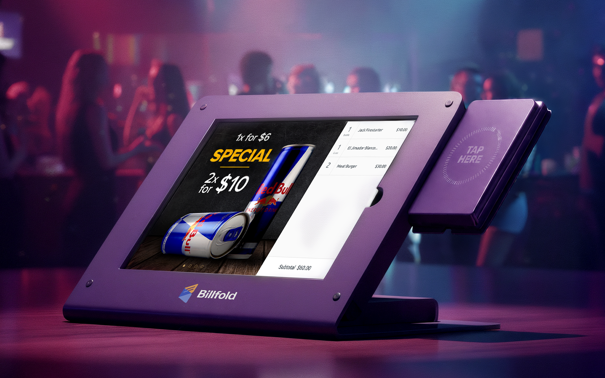

Hand movement becomes music. The configurator makes it playable.


Quray is a touchless music controller: ten sensors track your hands in the air and turn movement into MIDI and CV, control signals for synthesizers and modular systems. The hardware was already impressive. The software experience wasn't.
This is an in-progress case study. The product is still being designed and tested, so the focus here is on the work completed so far: the research, the architecture, the prototype, the decisions made, and the assumptions still being tested.

Overview
When I joined, Quray was not an idea on paper. The hardware had already been shown at Superbooth Berlin and was impressive enough to get attention. What was missing was the product layer around it: how presets live, how they sync to the device, what gets edited, what gets saved, and what is safe to perform with.
Overview
The brief was framed as a UI cleanup. I treated it as a product architecture problem. Before changing the interface, I had to define the configurator's actual role: not just an editor, but the bridge between invisible hand movement, external sound, and a physical device used under performance pressure.
The job became to design the missing product layer: the structure and feedback that let a musician move from an experimental device to a playable instrument.



The Challenge
The Challenge
Quray's core interaction is invisible. The device has buttons and a screen for stage navigation, but the playing happens in empty air above it. Users can't see the field and can't tell whether their movement is being tracked. And because Quray is a controller, not a synthesizer, it makes no sound on its own. A new user can do everything right and still hear nothing.
The audience made the problem harder. They have watched too many expressive controllers fail at the software layer and they are skeptical by experience, technically demanding, and precise about control. I also didn't come from this world, so I couldn't just start drawing screens. I had to learn enough to make decisions that weren't guesses.
There is nothing to look at where the music happens. The active field is a volume of air above the device, and zones have no physical edges. Each zone can trigger a note, control a parameter, or send a CV signal, but the user cannot see where the field starts, where one zone ends, or whether their hand is in the right place. The interface had to become the place where they could see the field, and learn how the invisible instrument behaves.
Quray is a controller, not a synthesizer. It only produces control signals, so the user has to connect external gear and configure the mappings before anything can be heard. That makes the first-use problem harder: silence can mean "nothing is connected," "the mapping is wrong," "the synth is not responding," or "the device is not tracking." The software had to replace that uncertainty with visible causality.
Before Quray can feel playable, the user has to understand the model behind it: presets, zones, mappings, MIDI, CV, device memory, save state, and sync. None of these concepts can be hidden completely, because this audience needs control. The challenge was to make the structure visible without turning the interface back into a developer panel.
The expressive-controller market is a graveyard. Enhancia closed and left users with orphaned hardware. ROLI went through bankruptcy and restructuring. The repeating pattern is familiar: impressive hardware, a convincing demo, configuration software built like a developer tool, and a buyer left alone in front of complexity. That is how an expressive instrument becomes "an expensive preset machine." The people who buy instruments like Quray have watched this happen repeatedly. They are not scared of configuration. They patch modular systems for fun. The problem starts when the software feels like someone else's internal logic: you can change values, but you do not really know what they mean, what they affect, or whether the result will survive outside the browser.
The configurator is one half of the product. The other half is the physical device, and the difficult part is the relationship between them. What is saved in the browser, what is stored on the device, what happens during calibration, what the hardware buttons do on stage, and what can fit on a tiny monochrome screen during a performance. I own that whole boundary, including the on-device screen states, which became a separate design challenge in 128 pixels.
I did not come from the music technology world, and in this project there was no way around that. You cannot design a MIDI/CV mapping interface without understanding what a CV voltage range actually does, why V/Oct matters for pitch, or what happens on stage when a preset switches mid-note. So I did the unglamorous work: studied the domain until I could follow forum arguments between modular users, learned how the signal chain works end to end, and talked to musicians, not to validate screens, but to understand how they think. They don't think in settings; they think in sound, gear, and muscle memory. Until I could think a little bit like them, every design decision would have been a guess.

The hard part was not making the interface cleaner.
It was making a complex instrument configurable.
My Part in This
I'm the sole designer on this project, everything from domain discovery to the working prototype is mine: audience research, competitive analysis, the interaction model, information architecture, the design system, the configurator build, and the full software/hardware interaction: how the device connects, calibrates, syncs, what its buttons do, and what its on-board screen shows during a performance.
Quray looks smaller than the enterprise systems I've designed, but it's the same category of problem: a hardware/software ecosystem with synchronized state, a technical audience, and routing logic that has to survive stage pressure. The team is smaller, but the system isn't simpler. And it's the project where I rebuilt my workflow around AI without handing over the decisions.
I joined the project days before Superbooth in Berlin. I couldn't be there in person — so I prepared a field research script: what to ask visitors who tried the device, what to observe while they played, which assumptions to test. The founders ran it at the booth, and the results came back as the project's first real user input — including the observation that shaped the entire onboarding strategy.
I don't come from the modular synth world, so I treated that as the first thing to fix. Research was built in layers — the founders' assumptions as hypotheses, competitive analysis of every comparable controller, then real user discussion on ModWiggler, Elektronauts, and Reddit. And I talked to musicians directly — not about my screens, but about their world. I wanted to be in their skin for a while, because they think nothing like SaaS users: in sound and gear first, in parameters and numbers last. That order — understand the thinking, then design the structure — is the whole method.
I used AI seriously here, and it changed what one designer can cover. I ran large-scale deep research across the forums where this audience actually lives — ModWiggler, Elektronauts, Reddit, KVR — plus competitor teardowns, review analysis, and domain learning: MIDI implementation, CV behavior, the conventions of modular gear. Work that would have taken weeks of manual reading happened in days. But speed only matters if the output survives scrutiny, and a lot of it didn't. Every finding went through the same test: does this match how real musicians in this niche actually behave, or is it a confident generalization? I kept what was grounded, discarded what wasn't, and documented why. AI covered the ground. Critical thinking decided what was true.
Every significant decision was recorded at the moment it was made, with the alternative I rejected and why. Not reconstructed afterward for a portfolio — captured while it was fresh, including the mistakes.
After locking the visual direction in Figma, I built the configurator directly in code with Cursor — React, a design token system, a living styleguide. This is the part of my workflow I'd argue is a genuine competitive advantage: instead of a clickable picture, I put a working product in front of musicians. Real filters that filter, live device state, actual sync logic, every edge case behaving. The prototype that gets tested is the product that gets built — and the design system literally cannot drift from the implementation, because it is the implementation.
The prototype is currently in usability sessions with target musicians. The next phase of this case study — what broke, what surprised me, what changed — is being written as it happens.

Research & Discovery
I didn't know this domain, and the founder's understanding of the audience was marketing-led — "expressive, visual, for everyone." That works for a launch video and fails for a configurator. So I built research in layers: founder assumptions as hypotheses, competitive analysis, then real user discussion in the forums where this audience actually argues.
One finding reframed everything. The expressive-controller market hasn't failed on technology — it has failed on product. The pattern is always the same: impressive hardware ships with software that reads like a developer's internal tool, and the buyer never finds their way in.
Founders' assumptions first — useful as hypotheses, never as facts. Then competitive research: gestural controllers, expressive MIDI instruments, modular tools, hardware companion apps. Then the real material: ModWiggler, Elektronauts, KVR, Reddit, long-form reviews and long-form complaints. The discipline that mattered: I moved up a layer only when the previous one raised specific questions. Competitor analysis told me which failure patterns to look for in forums; forum reading told me which founder assumptions to challenge.
I wrote targeted research briefs — one per competitor landscape, one per audience segment — specifying the exact forums, the exact products, and the exact workflows to examine, asking for direct user quotes and for patterns that differ between segments. A vague prompt returns a confident generic answer; a specific brief returns something I can interrogate. This let one designer cover a research surface that would normally take a small team.
Not everything survived. Some AI research output drifted toward a generic "gesture controller" mental model — recommending patterns for a product that isn't Quray: wizard-style onboarding this audience explicitly rejects, interaction models the hardware doesn't support. I kept the findings that were grounded in real user behavior, discarded the rest, and documented the reasoning for every rejection. In a niche domain, a generic answer sounds convincing precisely because it's missing the logic of real users. Knowing which answers to throw away was worth more than the speed.
The research script I prepared for the Berlin booth came back with the project's single most valuable behavioral observation: people repeatedly moved their hand toward the device, expecting depth to control something. The hardware tracks a flat field — no depth axis. That gap between intuition and reality isn't a technical problem; it's an expectation problem. If onboarding doesn't teach the field's geometry explicitly, users conclude the device is broken.
The hardware looks like it's built for dramatic stage performers. The research said the people most likely to actually buy it are modular synth enthusiasts: technically literate, financially capable, hungry for CV control no competitor offers, and deeply skeptical of anything that limits their control. This shifted real decisions: CV became a first-class feature instead of a secondary panel, and the entire mapping UX was rebuilt around their most-cited pain.
The founders started with three equal audiences — including sound-healing practitioners. I removed that segment, and it was the harder call because they were attached to it. The argument: the price point doesn't match the audience, there's no evidence they buy comparable devices, and designing for them would pull every decision away from the people who actually would. Designing for everyone produces a configurator for no one.
Across every forum, one complaint repeated: manual MIDI CC lookup. Find the synth's manual, find the implementation chart, find the number, type it in, hope. Users called it "soul-crushing" and "a flow killer." This became the central UX problem of the mapping interface — and the foundation for one of the most important design decisions in the product.
Quray has no one primary persona — the primary user depends on the surface. The configurator must satisfy modular users who care about routing precision. The physical device must protect a performer from disaster on stage. The original prototype failed partly because it collapsed those needs into one screen. Recognizing this shaped the information architecture more than any single finding.



Understanding the Users
Quray doesn't have one user — it has different primary users on different surfaces. The person dazzled by the device on stage isn't necessarily the person who'll sit down and route CV outputs. The configurator's job is to serve the second group without alienating the first. Getting that wrong is exactly how the original one screen tried to please everyone and served no one.
So I defined who drives which decision. Modular and experimental musicians drive the configurator — they need depth, control, and trust. Live performers drive the device and stage behavior — they need safety and readability under pressure. Naming that split was the difference between designing for a real person and designing for an average of three.
The configurator's core user. Technically literate, often working in engineering or audio, comfortable spending €300–500 on a single module — so Quray's price isn't a barrier if the device feels serious. They don't reject complexity; they reject arbitrary complexity.
Training was a patchwork of scattered PDFs, printouts, and random videos. Employees didn't know how or when to use them, so training became improvised and inconsistent across stores. Mistakes weren't the exception, they were baked into the process.
With no proper system, knowledge spread informally. New staff shadowed older colleagues, picking up skipped steps and bad habits. Errors multiplied, costing the business wasted hours and inconsistent quality.
Instead of driving the business forward, senior staff spent hours re-explaining routine tasks. Valuable time that could fuel growth was lost to re-teaching.
Many employees failed tests multiple times, not from lack of ability, but from overwhelming and poorly structured materials. Each failure chipped away at confidence and motivation.
For many, Subway was their first job. Fear of failure and lack of confidence made them hesitant to ask for help, slowing onboarding even more.
In smaller towns, weak internet, outdated devices, and low digital literacy made learning harder. The system had to work for everyone, not just the tech-savvy.
Without a digital platform, managers had no clear view of who was trained, who was struggling, or where mistakes occurred. Problems surfaced only after they hurt the business.
The creative core. Ambient, noise, improv, Max/MSP and TouchDesigner users — they overlap with modular users but aren't identical. They tolerate ambiguity if it produces interesting results, but they still need the system stable enough to become an instrument rather than a one-time experiment.
Franchisees juggled binders, emails, and calls to HQ. Marketing rules, compliance docs, and training materials were scattered everywhere. Important updates often got buried, leading to compliance mistakes and exposing stores to risk.
Opening a store was a maze of unclear steps with no way to track progress. Each new franchisee pieced it together differently, causing delays, last-minute surprises, and costly errors. Launches dragged by weeks, directly cutting into revenue for both owners and HQ.
Every missing detail turned into another phone call. HQ was swamped with repetitive requests, while owners felt unable to move forward independently.
Even when materials existed, they were dense and hard to apply. New owners didn't know what was essential and what was "nice to know." Many defaulted to outdated promotions or improvised materials, which hurt customer experience and weakened brand trust.
For many owners, the process felt lonely and stressful. Without clear guidance, they were never sure if they were "doing it right." That uncertainty created frustration on both sides and strained relationships with HQ.

The stage user — and the one with the most to lose. On stage, the priority isn't depth, it's survival: switch presets without cutting off a note, see what's current and what's next at a glance, kill all sound instantly when something goes wrong. They think in setlists, not databases. This group is why the device has a performance context separate from editing, and why "don't break the performer" overrode almost every other convenience.
HQ spent hours answering the same questions from dozens of stores daily. Strategic work was sidelined by repetitive support.
Without insight into franchisee training, HQ only discovered gaps later, as compliance failures, inconsistent operations, or customer complaints.
Scattered materials meant stores applied rules differently. Customers noticed, weakening trust in the brand.
Each new store required hands-on support from HQ. What should have been a repeatable process became a one-off struggle, making expansion slower, more expensive, and harder to sustain.
"Before research, we saw 'employees' and 'franchisees' as abstract groups. After Olga's work, they became real people with voices and needs we couldn't ignore."

From Research to Architecture
From Research to Architecture
The original tool had no structure to clean up — it had to be invented. Everything lived on one screen. There was no library, so anything you created loaded straight onto the device. No sets, no way to group presets for a show. No way to reorder what's on the hardware, and no real sync — the browser and the device just assumed they agreed. Before drawing anything, I had to define the product's spine: where work lives, what loads onto the device, how the two stay in sync. None of these concepts existed.
I didn't lock that structure early. I sketched a first version, saw how many guesses it contained, and made a method decision: build the six task flows first and let the architecture prove itself against real scenarios — connecting, calibrating, building a preset, performing, recovering. The final structure came out far from my first sketch, which is exactly why I didn't commit to the sketch. Designing the flows before the architecture meant the users' reality shaped it, not my assumptions.
One screen for the vendor, one for the guest. I designed each side to show only what that person needed: no shared clutter, no accidental cross-taps, no confusion about who sees what.
Buttons sized for people working fast in loud environments. Bartenders could select items and process orders without slowing down or second-guessing the UI.
Select items. Tap to pay. No extra confirmations in the happy path. Average transaction time: under 2 seconds.
When Wi-Fi dropped, the POS kept running — caching transactions locally and syncing when connectivity returned. Staff saw a subtle status indicator but service never stopped.
Refunds and voids were accessible but required confirmation steps, reducing the risk of accidental or unauthorized use under pressure.


The Guest-Facing Screen
The Guest-Facing Screen
For guests, confidence was everything. In the middle of a noisy crowd, they needed to know their order was right and their payment went through, without second-guessing or asking staff. The customer-facing screen had to remove doubt in an environment where attention lasted only a second.
That meant showing the right information at the right time: clear totals, instant confirmation, and feedback that felt effortless. The goal was simple — make every tap trustworthy, so guests could spend less time worrying about payments and more time enjoying the event.
Each item appeared in real time as the vendor added it — e.g., "Beer ×2 – $12." Guests could see exactly what they were paying for, which cut disputes before they started.
The screen showed a clean total and a single prompt: "Total $24. Tap wristband to pay." After payment, a large green checkmark confirmed it instantly — no ambiguity.
If a tap failed or a card was declined, the screen showed clear, calm feedback: "Card declined — try another card." Tone was treated as part of the UX. Embarrassment in a crowd makes things worse; the goal was to resolve the moment quietly.
During idle times, the screen could display sponsor promos or venue messages. I designed a banner area that appeared only when no transaction was in progress, and kept it visually quiet to avoid distracting from the main task flow.
After checkout, guests at select events could round up and donate spare change. Making it a single tap with no friction turned it into a surprisingly high opt-in — people at festivals, in a good mood, will give if you make it effortless.


The Guest Journey: Check-In Kiosks
The Guest Journey: Check-In Kiosks
The first impression of any event happens at the gate. Guests arriving with excitement don't want to stand in another long line just to set up a wristband. The self-check-in kiosk had to make registration quick, intuitive, and foolproof, so thousands of people could flow through without bottlenecks.
The design challenge was to guide distracted guests through a one-time setup in under 20 seconds. Clear instructions, simple steps, and instant feedback made it possible. Once their card was linked to the RFID wristband, guests could put wallets and phones away and just tap to pay.
Tap wristband → swipe or insert card (or use Apple/Google Pay) → optional: enter phone/email for a receipt → done. Most guests were through in under 30 seconds.
Progress indicators ("Step 2 of 3") told guests the flow was short. Icons: a tapping wristband, a card, made each action self-explanatory. The confirmation screen told guests their wristband was now their wallet.
Kiosks had to work in direct sunlight and at night, for guests who might not speak English. Language selection was offered upfront. The UI used simple phrasing, large text, and universal icons to remove any dependence on reading.
Knowing check-in could become a bottleneck itself, we designed for multiple kiosks in parallel and roaming staff with handheld versions running identical software. My flows had to handle someone starting at a kiosk and finishing with staff assistance.


Results in the Real World
Results in the Real World
Billfold grew from a fragile prototype into the payment backbone of major festivals and stadiums, built to handle the moments when thousands of guests order at once. Even under peak demand, transactions cleared in under 2 seconds, and sales continued seamlessly through network drops thanks to offline resilience. Bartenders finally could focus on serving and guests on enjoying the night.
The business impact was undeniable: guests spent up to 60% more, transactions increased by 23%, and organizers reported double-digit revenue growth after switching to Billfold. Tips doubled, queues shrank, and vendors finally had a system they could trust under pressure. Today, it’s still running at large events worldwide, a direct result of design choices made to balance speed, clarity, and resilience.
Transactions that once took ~1 minute on traditional card readers dropped to under 2 seconds with RFID. At peak hours, bartenders could process more than 200 orders per hour, shrinking bar lines and keeping guests in the show instead of stuck in queues.
When payment is invisible, people spend more. Guests no longer worried about wallets, phones, or failed card swipes. Clear on-screen confirmations made every tap trustworthy. Per-person spend rose up to 60% at some venues, and RFID users spent over 2× more than card users at large festivals.
Most POS systems come with a training manual. This one didn’t need one. Staff picked it up in their first shift, and because the interface was error-proof and the flow minimal, they could run hundreds of orders confidently without slowing down or second-guessing the screen.
Staff not only served faster — they earned more. Seamless checkout made tipping effortless, and bartenders saw their tips double on average. A better UX flow had a direct impact on take-home pay.
Faster throughput, more transactions, higher per-guest spend — the combination drove up to 50% higher total revenue at major events. For organizers, switching to Billfold wasn't just a UX upgrade, it was a business decision that showed in the numbers.
When the network dropped, the POS kept running. Transactions were cached locally and synced automatically when connectivity returned — 99% offline success rate. No lost sales during failures, and real-time dashboards gave organizers visibility across every vendor the moment service resumed.


Billfold proved that when payments run smoothly, everything else follows: faster lines, calmer staff, and happier guests.

Reflections & Growth
Billfold pushed me to design for real-world chaos, not polished screens. Working remotely and solo, I had to move fast, trust my decisions, and make them work for bartenders with 30-second training and guests who barely looked at the UI.
What mattered most were the small wins: one clearer total, one fewer tap, one steadier flow, and lines shrank, staff exhaled, sales climbed. It proved to me that the best design shows its value under pressure, where clarity makes the biggest difference.
Because I couldn't be on-site, I had to adapt my research approach, relying on staff videos, real-time feedback loops, and rapid iterations with engineers in the field.
It wasn't always perfect, but it taught me to stay curious, flexible, and resourceful.
At the same time, working as the only designer in a startup pushed me to grow in resilience and autonomy: trusting my instincts, making fast decisions, and defending them to a cross-functional team that needed results, not just polished screens.
I got a crash course in designing hardware and software together, aligning screen logic with RFID behavior, and understanding how even a 1-second delay could break trust.
That experience pushed me to think less about individual screens and more about the system as a whole: how devices, flows, and infrastructure connect to shape the user experience.
I saw first-hand how UX drives business metrics.
Faster flows and clearer screens didn't just feel better, they increased revenue, enabled tens of thousands of extra transactions, and gave venues confidence in a system they could rely on.
Design wasn't decoration here, it was directly tied to dollars, scale, and trust.
When design removes friction, everyone wins: staff feel supported, guests stay engaged, and the business sees the difference in the numbers.